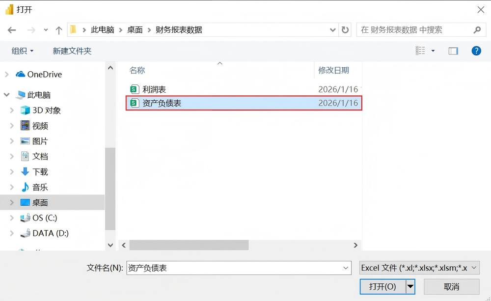
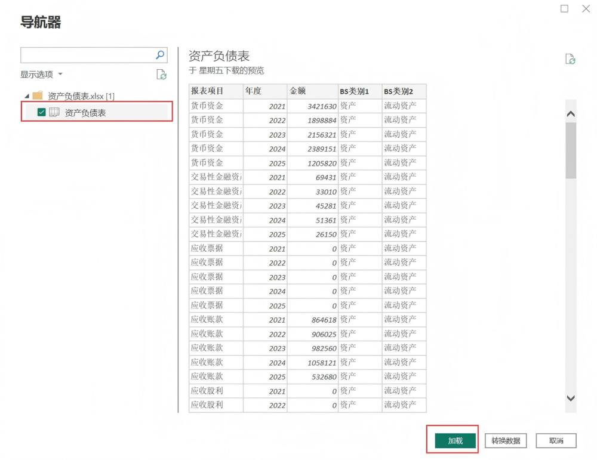
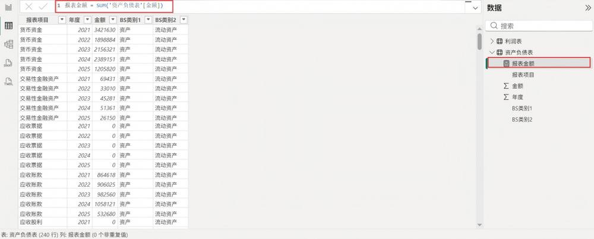
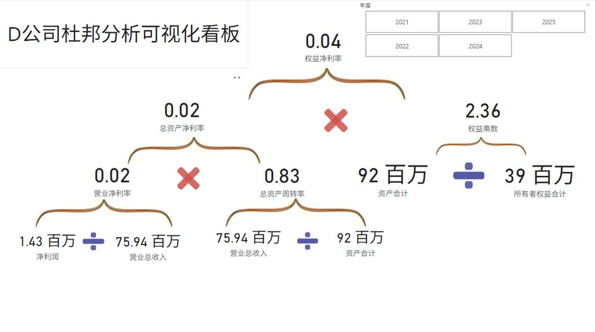
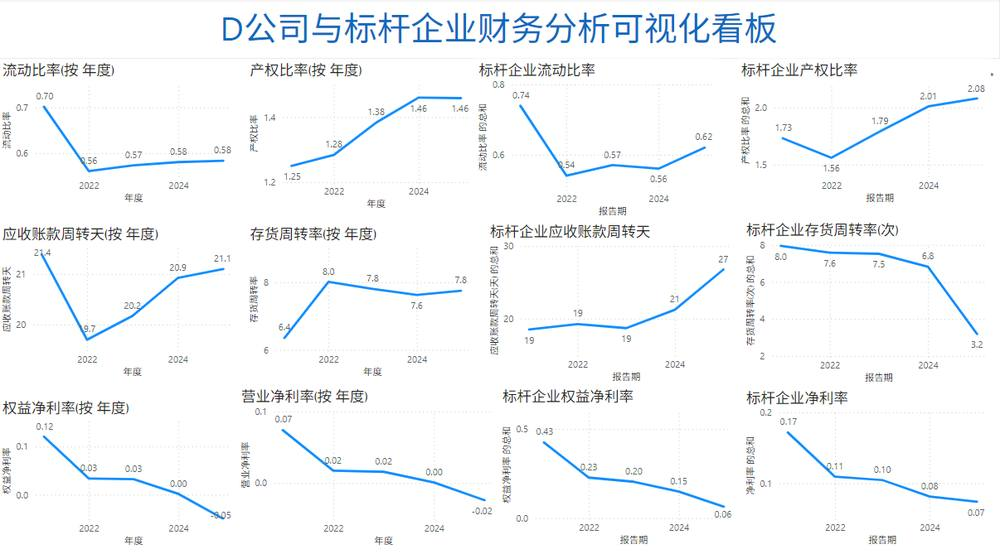

第 1 页 · 项目七

项目七
AI+财务报表分析
从数据到决策：AI赋能财务分析新范式
AI驱动财务洞察 · Power BI报表可视化 · 数据驱动决策落地
知识目标
理解财报分析的核心维度与AI应用逻辑，掌握Power BI基础操作。
能力目标
运用AI技术构建财务报表分析模型，使用Power BI实现数据可视化呈现。
素养目标
树立财务数据规范与安全意识，培养创新思维与财务实践的融合意识。
【备注】大家好，欢迎来到项目七的学习。本次课程主题是“AI+财务报表分析”。我们将从知识、能力、素养三个层面设定清晰的学习目标，旨在帮助大家掌握利用AI进行财务报表分析的核心技能，实现从数据到决策的价值转化。
第 2 页 · AI导学 · 财务分析重塑
AI导学 · 财务分析重塑
AI如何重塑财务报表分析
传统财务分析的痛点
数据来源分散
多系统数据割裂，勾稽关系复杂，难以快速完成整合与核对工作
手动效率低下
依赖人工收集录入数据，重复劳动多，基础核算挤占深度分析精力
对标对比困难
无法高效完成跨期趋势追溯与同业数据对标，分析视角单一局限
风险挖掘不足
海量报表附注信息无法高效解读，难以快速识别潜在财务风险点
AI的解决方案与重塑价值
| 核心维度 | AI技术应用方式 | 财务分析价值与成果 |
| 智能数据处理 | 自动化提取与清洗 | 自动整合分散财务数据，消除手工整理误差，大幅缩短数据准备周期 |
| 附注文本深度解析 | 智能解析非结构化附注文字，提取关键经营与风险描述，还原数据背景 | |
| 多维度数据关联 | 关联企业多期财报及同业财务数据，构建完整可比的财务分析全景图 | |
| 智能决策支持 | 动态指标与可视化 | 实时生成关键财务指标与动态可视化图表，直观呈现经营健康度与趋势 |
| 风险识别与预测 | 自动扫描识别潜在财务风险信号，构建财务预警模型预判未来变动，辅助管理者精准决策 |
学习本模块的核心收获
掌握财务AI工具应用
熟练运用AI技术处理海量财务数据，高效完成数据清洗与核对工作
建立智能财务分析思维
跳出传统核算视角，学会利用AI深度挖掘财务数据背后的业务风险与机会
赋能财务价值落地
将AI财务分析结果转化为风控建议与经营决策依据，助力企业稳健发展
【备注】在正式开始之前，我们先了解一下AI是如何重塑财务报表分析的。传统财务分析面临数据分散、效率低下、对标困难等痛点。而AI技术能通过自动化数据处理、高效指标生成、智能风险识别和预测预警，有效解决这些问题，显著提升财务分析的效率和深度。本模块将帮助大家掌握利用AI进行高效财务分析的方法，实现从核算到决策的财务价值跃迁。
第 3 页 · 案例实践 · D公司财务深度诊断任务
案例实践 · D公司财务深度诊断任务
D公司财务分析与健康度评估
01 / 公司背景与核心困境
企业定位
高性能化工新材料研发战略扩张期生产企业
面临瓶颈
传统工具联动分析弱历史数据下钻效率低
核心任务一
搭建杜邦分析体系诊断盈利驱动根源
核心任务二
三大能力深度对标评估行业竞争地位
02 / 财务分析维度与执行细节
| 分析模块 | 关键分析问题拆解 | 所需数据支撑 |
| 杜邦体系分析 | 净资产收益率逐年变动趋势？净利率、周转率与权益乘数如何驱动ROE？ | 2021-2025年上半年资产负债表同期利润表完整数据 |
| 偿债能力评估 | 流动/速动比率是否符合行业安全标准？有息负债率高吗？利息保障倍数是否充足？ | 短期/长期负债明细数据财务费用科目数据 |
| 营运效率对标 | 应收账款/存货周转率与竞品差距？现金循环周期长短是否影响资金占用？ | 应收/预付账款明细台账行业标杆财务指标公开数据 |
| 盈利质量分析 | 毛利率/净利率波动原因？核心产品线的盈利贡献度排序？ | 各产品线收入成本明细表年度利润表细分项目数据 |
03 / 分析质量与落地保障
财务数据标准化清洗
统一各年度报表会计口径，修正异常数值与缺失数据，确保跨期与横向对比分析的准确性。
多维交叉验证逻辑
结合宏观行业数据与企业业务扩张节奏，对财务指标结果进行业务逻辑的合理性校验。
管理建议落地与复盘
基于诊断结果制定针对性财务优化策略，明确责任部门与时间节点，并定期追踪执行成效。
【备注】为了让大家更好地理解财务分析的应用场景，我们将通过D公司这个具体的案例来展开学习。我们将扮演D公司的财务分析师，面对这家正处于战略扩张期的化工新材料企业，我们的任务是基于它多年的财务数据，完成两大核心任务：第一，构建杜邦分析体系，层层拆解ROE的驱动因素，精准诊断盈利强弱的根源；第二，对偿债、营运和盈利这三大能力进行全面评估，并与行业标杆企业对标，最终形成可落地的财务健康优化方案。接下来，让我们一步步拆解分析任务。
第 4 页 · 01

01
TASK 01 · 任务一
经营者角度的财报分析
从理论到模型，构建分析框架，系统学习经营者视角下财报分析的核心逻辑，掌握如何借助AI技术将经营决策思路转化为标准化、可落地的分析工具，赋能业务决策效率提升。
基础认知：分析逻辑三步法
深度拆解经营者视角下财报分析的三步法核心逻辑，理解财务数据与企业经营决策之间的深层关联，建立专业的分析思维模式。
AI构建：可复用分析框架
掌握利用AI工具将经营者的决策逻辑转化为可复用的分析框架，实现分析步骤的标准化配置，提升财报分析的效率与准确性。
【备注】现在我们进入任务一：AI驱动的经营者角度的财报分析。在这个任务中，我们将首先学习经营者视角下的财报分析逻辑，然后学习如何利用AI工具，将这些逻辑转化为一个可复用、可验证的分析框架。
第 5 页 · Task 01 · Financial Report Analysis Logic
Task 01 · Financial Report Analysis Logic
经营者角度的财报分析逻辑
01 / 计算当期四大核心财务指标
盈利能力指标
聚焦企业盈利水平，核心看营业利润率、销售净利率等，评估盈利质量
偿债能力指标
衡量债务风险与偿还保障，分析流动比率、资产负债率等关键安全指标
营运能力指标
检验资产管理效率，通过总资产周转率、应收账款周转率判断运营效率
发展能力指标
评估长期增长潜力，关注总资产增长率、营业收入增长率等扩张指标
02 / 纵横向对比分析体系
| 分析类型 | 核心对比方法 | 经营决策参考价值 |
| 纵向分析 | 同比分析（本期vs上年同期）、环比分析（本期vs上一期） | 识别企业自身财务数据随时间的变动趋势，判断经营状况是持续改善、维持稳定还是面临下滑风险 |
| 横向分析 | 对标同行业可比企业、竞争对手、行业均值或优秀标杆企业 | 客观评估企业在行业中的竞争地位，发现自身相对优势与短板，明确经营差距与优化方向 |
| 综合判断 | 结合企业所处发展阶段、宏观环境与业务特性交叉验证 | 避免孤立解读单一数据，确保财务分析结果能真正反映经营实质，支撑精准的经营决策 |
03 / 分析实践关键与注意事项
统一数据口径标准
计算与对比前明确统计规则，保证纵向历史数据与横向对标数据口径一致可比
审慎选择对标企业
横向对比需聚焦业务模式、规模体量相似的企业，确保分析结论具备参考价值
财务结合业务实质
深挖数据背后业务动因，避免仅停留在数据表面，确保分析指导经营行动
【备注】经营者分析财报，要遵循清晰的三步逻辑。第一步，计算当期核心财务指标，从盈利、偿债、营运、发展四个维度全面掌握企业自身当前的财务状况。第二步，进行纵向分析，通过同比和环比对比历史数据，识别经营趋势的变化。第三步，进行横向分析，对标行业内同类企业，精准评估自身的竞争地位。实践中，务必注意统一数据口径、审慎选择对标对象，并坚持财务与业务实质相结合，才能真正通过财报分析指导经营决策。
第 6 页 · Task 01 · 经营者财报分析体系搭建
Task 01 · 经营者财报分析体系搭建
运用AI构建经营者角度的财报分析流程
01. AI重构财报分析的底层逻辑
统一分析框架
将经营者决策逻辑固化，统一指标口径与计算标准，消除理解分歧
整合多维数据
打通财务数据与内部业务数据壁垒，对齐跨期间、跨企业的可比数据
自动关联诊断
自动识别关键数据间的隐藏关联，智能揭示异常波动的根源与趋势
02. AI输出的五大核心落地特点
01. 数据联动与差异化采集
不再局限财务报表数字，强化业务经营数据与财务结果的实时联动校验。
02. 聚焦穿透的杜邦式加工
以杜邦分析体系为核心，层层拆解财务指标至最小经营单元，挖掘深层问题。
03. 动态下钻的可视化看板
支持从公司整体盈利水平一键穿透到单产品线、区域或门店的实时表现。
04. 归因诊断的深度分析
跳出数据表面数值，智能归因指标变化背后的经营动作与市场环境原因。
05. 经营策略的直接落地
拒绝无效分析，所有洞察直接转化为降本增效、结构优化等可执行经营举措。
最终目标：决策闭环
确保每一次财报分析都形成“发现问题-制定策略-验证效果”的管理闭环。
【备注】这一页我们探讨如何运用AI构建经营者视角的财报分析流程。首先，我们需要明确AI在其中的核心价值：它帮助我们统一分析框架，整合跨期跨部门的数据，并自动进行关联诊断。
其次，AI赋能后的分析结果具备五大落地特点：一是强化业务财务数据联动；二是基于杜邦分析的深度穿透；三是可视化的动态下钻能力；四是针对变化的归因诊断；最终，所有分析都将直接落地为具体的经营策略，形成决策闭环。
第 7 页 · 02

02
TASK 02 · 任务二
Power BI财务报表分析可视化
从理论到实践，亲手打造可视化看板，整合企业内部财务数据与外部标杆企业信息，构建专业财务分析视图，助力财务状况的深度洞察与科学决策。
数据采集
学习使用Power BI获取企业内部财务数据，同时导入外部标杆企业的相关财务信息，掌握多源财务数据的整合与清洗技巧。
加工与可视化看板
掌握关键财务指标度量值计算，对整合后的数据进行建模，并开发可视化财务分析看板，清晰呈现核心财务指标的对比与趋势。
【备注】理论学习结束，现在我们进入任务二：Power BI财务报表分析可视化。在这个任务中，我们将亲手操作，学习如何从Excel文件中获取企业内部和外部标杆企业的财务数据，进行加工处理，并最终将其转化为一个直观、强大的财务分析看板。
第 8 页 · Task 01 · Data Acquisition
Task 01 · Data Acquisition
Power BI 数据采集实操
企业内部数据采集流程解析
| 步骤 | 操作路径 | 详细操作说明 |
| 01 获取 | 主页 → 获取数据 → Excel工作簿 | 在Power BI首页点击“获取数据”按钮，展开下拉列表，选择“Excel工作簿”作为数据源类型。 |
| 02 选文件 | 浏览定位 → 选表 → 确认 | 弹出文件浏览器后，找到存放路径，选中“资产负债表.xlsx”和“利润表.xlsx”两个文件并打开。 |
| 03 加载 | 勾选表 → 加载 | 在导航器窗口勾选目标工作表，确认数据预览无误后，点击右下角“加载”按钮完成数据导入。 |
核心界面实操演示

01 文件选择窗口
在弹出的系统对话框中精准定位本地存储的财务报表文件，支持同时选中多个表格文件进行批量加载。

02 数据预览加载
进入导航器后可查看表格原始结构，核对列名与数据准确性，确认无误后执行加载完成数据入模。
💡 外部数据补充采集
除内部Excel外，还可通过AI工具（如DeepSeek）采集万华化学等标杆企业公开指标，经官方财报复核后加载进Power BI完成对标分析。
关键注意事项
文件格式合规
确保表格无合并单元格、空行或不规则表头，避免加载异常。
外部数据校验
所有AI采集的外部数据必须与上市公司财报复核，统一计算口径。
增量刷新设置
建立好连接后，配置自动刷新或手动刷新机制，保持数据实时性。
【备注】实战的第一步是数据采集。本页主要分为两部分：首先是企业内部数据的导入，大家可以按照屏幕上的步骤，通过Power BI的“获取数据”功能，选择Excel工作簿，定位到我们的资产负债表和利润表文件，然后在导航器中确认并加载即可。大家可以看到中间的两张截图，分别展示了文件选择和数据预览的关键界面。
其次，除了内部数据，我们还需要外部标杆企业的数据做对比。这里可以借助DeepSeek等AI工具快速抓取，但必须注意人工核对，确保指标口径一致。最后请大家务必关注底部的三个注意事项，尤其是外部数据的校验，这是保障后续分析结果准确的基础。
第 9 页 · Task 02 · Financial Data Processing
Task 02 · Financial Data Processing
数据加工：构建核心财务指标
核心财务指标的DAX构建与模型关系配置
01. 基础度量：报表金额
SUM函数汇总资产负债金额，搭建计算根基
02. 偿债能力指标
计算流动比率、权益乘数，评估财务风险
03. 盈利能力指标
配置净利率、周转率，分析盈利效率水平
04. 跨表关系建立
关联资产负债与利润表，打通数据孤岛

核心加工：度量值与公式应用
首先创建基础度量“报表金额”实现数据汇总；再利用CALCULATE与DIVIDE等DAX函数，计算资产合计、流动比率等偿债指标，以及营业利润、净利率等盈利指标，实现对企业财务状况的量化分析。
财务数据加工的业务价值与落地意义
统一计算口径，消除数据偏差
通过标准化的DAX公式定义核心指标，避免人工核算差异，让财务、业务团队在统一口径下开展分析与决策，确保数据一致性。
构建指标网络，实现深度洞察
整合偿债、盈利、运营三大类指标，将分散的财务数据串联成完整分析网络，帮助管理者从资产效率到利润质量进行全方位透视。
打通跨表逻辑，支撑联动分析
建立资产负债表与利润表的年度关联，实现跨表数据联动计算，可灵活分析资产结构对利润表现的影响，挖掘深层经营问题。
【备注】数据加载完成后，我们正式进入数据加工阶段。核心任务是通过DAX公式计算关键财务指标，并建立表间关联。
首先，新建“报表金额”等基础度量值，对原始财务数据进行聚合；其次，利用CALCULATE、DIVIDE等函数计算流动比率、权益乘数、营业净利率等分析指标；最后，在模型视图中通过“年度”字段连接资产负债表与利润表，消除数据孤岛，为后续综合分析打下坚实基础。
第 10 页 · Task 03 · 财务分析看板制作
Task 03 · 财务分析看板制作
数据可视化：D公司杜邦分析看板
01 / 看板核心呈现效果
杜邦分析逻辑可视化展示
将权益净利率（ROE）作为核心顶层指标，向下逐层拆解为总资产净利率与权益乘数，再深入拆解营业净利率与总资产周转率，通过数学逻辑符号串联，清晰还原财务驱动因子。
看板预览：
采用层级卡片+运算符号串联，搭配年度切片器，实现不同年份数据的一键筛选与对比分析。
02 / 关键实现步骤拆解
步骤1：指标卡片与筛选控件搭建
首先为ROE、总资产净利率、权益乘数等5个核心指标创建独立数据卡片；然后插入“年度”切片器，设置年份筛选联动，保证看板交互性与动态分析能力。
步骤2：逻辑串联与布局美化
添加乘号、除号等运算图形符号连接指标卡片，还原“ROE=总资产净利率×权益乘数”的公式；调整卡片间距与对齐，使层级结构清晰、视觉动线流畅。
03 / 看板应用价值场景
| 分析场景 | 管理决策价值与应用说明 |
| 经营效率诊断 | 通过总资产周转率和营业净利率，快速定位企业资产周转是否低效、产品盈利是否不足，明确效率优化方向。 |
| 财务杠杆监控 | 借助权益乘数指标，直观评估当前负债经营水平，判断企业财务风险高低，避免过度举债带来的偿债压力。 |
| 业绩归因分析 | 对比不同年度ROE变动的驱动因素，确认是盈利能力变化、资产效率变化还是杠杆调整带来的业绩波动。 |

【备注】数据准备完成后，我们正式开始制作D公司的杜邦分析看板。这个看板的核心目标是将复杂的财务比率公式可视化。首先，我们会创建独立的卡片展示权益净利率、总资产净利率等核心指标；然后插入“年度”切片器，方便大家筛选查看不同年份的财务表现；最后通过添加运算符号，清晰地将这些指标的逻辑关系串联起来。整个看板做好后，就可以帮助管理层直观地进行经营效率诊断、财务风险监控以及业绩归因分析，让每一个决策都有据可依。
第 11 页 · Step 02 · Benchmarking Dashboard
Step 02 · Benchmarking Dashboard
数据可视化：D公司与标杆企业对标看板
01 新建对标分析看板页
新建可视化分析页面并命名，规划看板布局，预留折线图展示区域，聚焦财务核心指标的对比维度。
02 插入多组对比折线图
分别构建流动比率、产权比率等6项财务指标折线图，每条折线对应D公司与行业标杆，确保数据时间维度统一对齐。
03 完善看板标题与说明
添加看板标题与指标说明文本框，明确各图表代表含义，统一调整字体与配色，确保看板视觉风格专业一致。
看板效果展示与核心逻辑
▍ 对标分析看板核心逻辑
1. 指标维度：覆盖偿债能力（流动比率）、营运能力（应收/存货周转）、盈利能力（净利率）三大类核心财务指标，实现全方位差距扫描。
2. 对比视角：每一项指标均同时呈现D公司自身走势与标杆企业同期数据，趋势线并列展示，让差距大小、变化节奏一目了然。

实操优化与使用技巧
统一数据口径
确保D公司与标杆企业数据计算规则一致，如周转天数、利润率统计周期与公式保持统一。
突出关键差距
调整折线颜色区分主次，将D公司线设为醒目的主色，并添加数据标签标注差距较大的时间节点。
联动筛选数据
添加年度、季度等切片器控件，实现全看板联动筛选，可聚焦查看某一阶段的对标差异细节。
定期自动刷新
设置数据源连接，让看板数据按固定周期自动更新，减少人工维护成本，保持数据时效性。
【备注】接下来，我们制作对标分析看板。这个看板的核心目的是将D公司与行业标杆进行“同台竞技”。首先，我们需要新建页面并规划布局，重点是为每一项关键财务指标创建独立的折线图。大家看中间的效果图，我们将流动比率、产权比率等六大指标，按偿债、营运、盈利三个维度排列。每一组折线图都同时展示D公司与标杆的走势，这样任何一个指标上的差距，无论是大小还是变化趋势，都能被清晰地捕捉到。制作时要注意统一数据口径，并突出显示关键的差异点，方便管理层快速定位问题。
第 12 页 · 03

03
TASK 03 · 任务三
AI辅助财务报表分析报告撰写
从洞察到行动，让数据产生价值，深度挖掘财务报表中的核心信息与业务规律，将分析成果转化为可落地的财务决策依据。
看板数据解读
学习如何从财务可视化看板中提取核心结论，精准识别关键财务指标表现与业务风险，高效回答财务与业务的核心问题。
AI辅助报告生成
基于深度的财务数据洞察，利用AI工具快速生成专业的财务分析报告，优化报告逻辑结构与专业表述，显著提升报告撰写效率。
【备注】现在我们进入任务三：AI辅助财务报表分析报告撰写。在这个任务中，我们将学习如何解读我们亲手制作的财务看板，从中提取有价值的洞察，并基于这些洞察，利用AI快速生成专业的财务分析汇报报告。
第 13 页 · 看板解读 · 财务能力深度洞察
看板解读 · 财务能力深度洞察
看板数据解读——偿债、营运与盈利全景分析
01 偿债能力分析
短期流动比率持续低于1，存在即时偿债压力；长期产权比率逐年上升杠杆增加，整体呈现“短期承压、长期可控”特征。
02 营运能力分析
存货周转率优于行业标杆，供应链管控效率突出；但应收账款周转天数高于标杆，资金回收周期偏长形成营运短板。
03 盈利能力分析
权益及营业净利率持续恶化并陷入亏损区间，对比行业标杆企业的盈利水平差距极为显著，盈利修复迫在眉睫。
偿债结构细节
流动比率长期低于健康线，营运资本存在持续性缺口，日常经营现金流需优先保障短期债务兑付需求。
资产周转关键矛盾
应收账款管理效率低下成为制约整体资产周转的主因，高周转存货带来的资金效率被应收款的长期占用完全抵消。
盈利差距根源
相较标杆产品溢价能力弱、成本管控偏松，叠加资产周转效率拖累，导致整体盈利水平处于行业劣势低位。
核心财务洞察总结
●财务风险与效率并存：短期流动性风险是当前显性财务压力点，运营层面存货供应链管控虽有优势，但应收账款高占用已形成明显效率拖累，两者共同加剧资金链紧绷。
●盈利危机亟待解决：盈利能力的持续恶化与行业标杆的显著差距，已超越效率问题上升为企业生存与发展的核心挑战，需优先重构盈利模型。
五项财务运营优化建议
补充流动储备
优化长短期债务匹配，补充流动性资金缓冲偿债压力
收紧应收管控
建立客户分级信用政策，实施应收账款专项催收机制
放大存货优势
深化供应商协同机制，将高周转优势转化为成本红利
聚焦盈利产品
淘汰低毛利亏损业务，集中资源打造高溢价核心产品
对标标杆改进
逐项拆解标杆盈利要素，落实成本与溢价双重优化
【备注】看板制作完成后，我们就可以从中解读出大量有价值的信息。比如，D公司短期偿债压力较大，但长期杠杆可控；存货管理效率高，但应收账款回收慢；最严峻的问题是盈利能力持续恶化，与标杆企业差距显著。这些结论为我们后续的决策提供了明确的方向，必须优先解决流动性风险并重构盈利模型。
第 14 页 · AI辅助分析 · 财务报告自动化
AI辅助分析 · 财务报告自动化
AI辅助财务报表分析报告生成
01. 如何让AI更好地完成任务
明确角色与场景
清晰定义AI扮演的财务分析师身份，并指明报告对象与应用场景
梳理财务核心信息
向AI完整提供业务背景、资产负债表、利润表等关键财务数据基础
精准锁定分析重点
明确指令聚焦盈利能力、偿债能力或运营效率等具体财务分析方向
02. AI驱动的报告生成流程
01
生成大纲与初稿
AI自动梳理输入的财务信息，搭建逻辑严密的报告框架，并完成专业叙述初稿撰写。
02
持续调校与深化
针对初稿细节提出修改意见，AI快速响应并迭代优化，补充深度财务分析视角。
03
辅助成果可视化呈现
将结构化分析结论转化为图表等可视化元素，形成完整的专业财务报告。
03. 财务分析洞察与应用策略
| 洞察维度 | 关键分析内容 | 管理决策与优化建议 |
| 盈利能力 | 毛利率波动明显，费用率居高不下，净利率低于行业均值 | 优化产品定价策略，严格管控运营费用，提升核心盈利空间 |
| 偿债能力 | 流动比率偏低，短期借款规模较大，面临一定资金周转压力 | 合理调整债务结构，加快应收账款回收速度，保障现金流安全稳定 |
| 运营效率 | 存货周转天数增加，资产利用率未达预期，运营效率待提升 | 推进供应链精细化管理，优化存货结构，全面提升资产运营效率 |
| 综合评估 | 整体财务健康度一般，结构问题突出但具备改善空间 | 制定系统性整改方案，分步落实优化措施，全面提升财务综合表现 |
【备注】基于财务数据洞察，我们可以利用AI工具快速生成一份专业的财务分析报告。要让AI更好地完成任务，需要清晰设定角色、提供准确财务信息并锁定分析重点。AI会先生成大纲和初稿，随后通过反馈进行持续调校与深化，最终协助我们将结构化分析转化为可视化的高质量报告，从而赋能管理层做出更精准的决策。
第 15 页 · AI应用实践

AI应用实践
AI拓展应用：报告优化
深度重构财务诊断报告，驱动决策落地
针对初步完成的《D公司2025年上半年财务健康深度诊断报告》，借助AI能力优化分析深度、搭建对标预警体系，并推动结论转化为切实可行的业务行动。
场景与目标聚焦
明确以D公司财务健康报告为优化对象，确立提升洞察深度、构建对标预警体系、促进结论向行动转化三大核心目标。
内容重构与精炼
梳理报告结构，将繁杂信息整合为逻辑清晰的八部分核心叙述流，去除冗余内容，强化分析逻辑的严密性与可读性。
量化建议落地
将分析结论转化为至少3条可量化、分阶段的落地建议，明确执行标准与预期效果，确保分析价值真正落地。
感谢聆听 · 共创AI赋能决策新篇章
【备注】最后，我们来探讨AI的拓展应用。在这个案例中，我们看到，即便AI生成了初步的报告，往往也需要进行针对性的优化。我们的核心目标是对D公司的财务健康报告进行深度重构，不仅要提升洞察的深度，更要构建起实用的对标与预警体系，并最终将所有分析结论转化为具体、可量化、可执行的业务行动建议，从而真正发挥数据分析的价值。